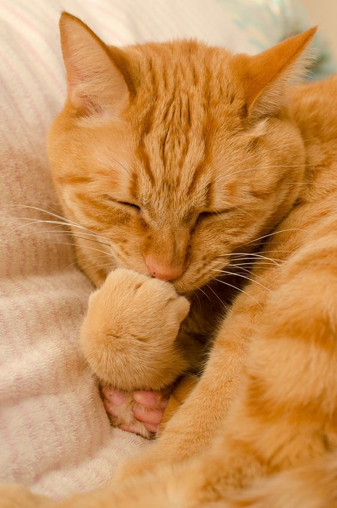

Orange Cats
Orange cats, also known as ginger or marmalade cats, are mostly male and tabby cats. Orange cats are known for having outgoing personalities and being very vocal and affectionate. One famous orange cat figure is Garfield.
